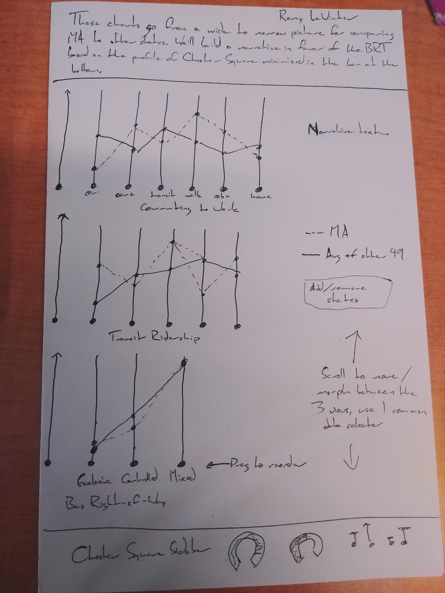

Katrina Beske, Remy LeWinter, Jinhong Huo
Service-Learning Course Project as part of DS 4200: Information Presentation and Visualization, taught by Prof. Cody Dunne, Data Visualization @ Khoury, Northeastern University.
Chester Square is a small neighborhood in Boston's South End. When the neighborhood was first built in the 19th century, the rowhouses lined a quiet unpaved street surrounding a large green park. Through the 20th century, city projects repeatedly rebuilt the park until only two thin strips remained and the now several-lane Massachusetts Avenue lay between them. Today, the Chester Square Neighborhood Association is exploring long-term strategies for restoring their park. Massachusetts Ave is an important route for commuters and commerce. Before restoration can become a serious consideration, policy and infrastructure must provide reliable and accessible transit alternatives to automobiles. The resulting decrease in road traffic would make it possible to rebuild Chester Square with one large park in the middle reuniting the two sides. Which form of public transit would most effectively reduce road traffic? If states with the highest proportion of commuters taking public transit have similar makeups of public transit ridership, our visualization can highlight the relationship. While a certain transit mode may stand out as the best method for reducing road traffic in general, Massachusetts Ave will remain an important route for vehicles. Maximizing the efficiency of these vehicles is necessary to sufficiently reduce road traffic. Though trams can eliminate some vehicles from a popular route, buses are much more versatile. The Chester Square Neighborhood Association supports Boston's Bus Rapid Transit (BRT) initiative, which is unfortunately far behind schedule. The BRT would update and expand Boston's fleet of buses and create bus lanes with exclusive right-of-way, allowing frequent, reliable, and speedy transit. Use our visualization to explore the data and discover patterns among state's transit riderships and the availability of bus lanes with exclusive and restricted rights-of-way. Compare selections of states between three datasets, and see where Boston fits in. The overview of Chester Square shows current residents' experiences with commuting in personal vehicles and via public transit. We hope that our visualizations will help people allocate their support for public transit projects by considering the needs of residents and the national trends in transit and commuting.
Embedded MP4 demo video using the HTML5 <video> tag. For example, this screen recording Prof. Cody Dunne made of Mike Bostock's flexible transitions in D3 slide:
final visualization screenshots (PNG images), design justifications, UI walk-through, and linked presentation slides.
Summary of data, data types, and data preprocessing.
We collected three datasets from the USDT Bureau of Transportation Statistics and one dataset from a survey of Chester Square residents. The following descriptions match the data used for our visualization. Original datasets may have included aggregates or other fields which were not relevant to our investigation. Any data encoded as a number of thousands or other unusual scale was transformed to normal decimal numbers.
| Domain Task | Query | Search | Analyze |
|---|---|---|---|
| How do Chester Square residents use public transit (bus and T) and private vehicles, and is their experience positive or negative? | Summarize | Lookup | Present |
| How does Boston's public transportation usage compare to Massachusetts overall and to other states? | Compare | Lookup | Present |
| Is there any pattern among states in terms of the proportion of commuters who use public transit, the proportion of transit ridership attributable to buses, and the proportion of directional bus route-miles with different rights-of-way? | Compare | Local | Present |
TODO: add discussion / explanation, fill out table.
Expectation: Clearly describes domain tasks, processes, goals and abstract tasks for domain problems.
When considering charts to display our three national datasets, we decided on the use of parallel coordinates to allow easy comparisons across states and datasets.
A choropleth allows users to see the national distribution of a variable. It also provides a convenient place to click and select states to highlight in the parallel coordinates charts.
A bar with minimized charts at the bottom of the visualization window can expand to show data for the Chester Square neighborhood.
In our final interactive sketch, we decided to take on all three of the tasks we listed in the preliminary sketch phase. Our first task, showing how Chester Square residents use public transit and private vehicles and how that compares to Boston overall, was the most difficult to implement, as the data we had for Chester Square doesn’t completely match up to the datasets we have from outside sources. We incorporated this task into our design by having a section at the bottom devoted to expandable charts and gauges displaying the information we collected from the Chester Square residents. To compare this to Boston overall, a user can look at the other charts above the bottom bar.
Our second and third tasks, comparing Boston’s public transportation usage to Massachusetts and Massachusetts to other US states, are both accomplished by the same encodings. Public transportation usage percentages are compared using a parallel coordinates graph with specific lines for Boston and Massachusetts as well as a line representing the average for the other 49 states.
Lines for specific other states can be rendered by clicking on that state in the heat map. Additionally, clicking on one of the vertical axes in the parallel coordinates chart will update the heat map with states’ values for that axis variable.
Sketches and design choices to justify final visualization.
Expectation: Evidence of iterative improvement. Logical discussion of design choices grounded in theory from course. Discusses feedback from usability testing.
Short summary of work completed and areas for improvement/future-work.
Expectation: Meaningfully wraps up project and has good future directions.